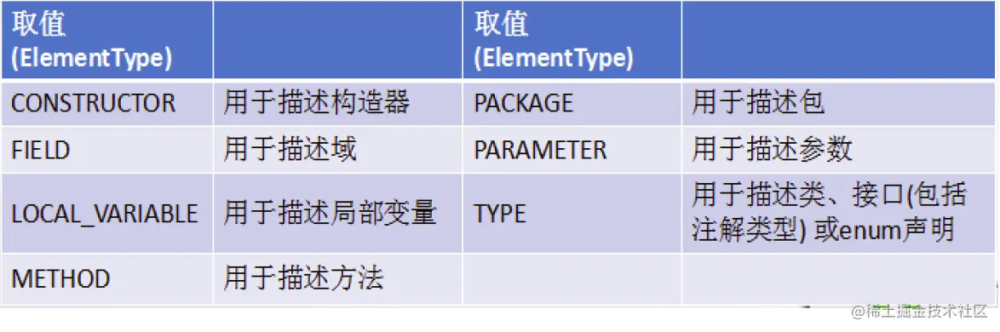

# 一、枚举类的使用
# 1. 枚举类的说明：
- 枚举类的理解：类的对象只有有限个，确定的。我们称此类为枚举类
- 当需要定义一组常量时，强烈建议使用枚举类
- 枚举类的实现：
JDK 5.0 以前需要自定义
JDK 5.0 后新增 enum 关键字用于定义枚举类 - 如果枚举类中只一个对象，则可以作为单例模式的实现方式。
- 枚举类的属性：
枚举类对象的属性不应允许被改动，所以应该使用 private final 修饰 枚举类的使用 private final 修饰的属性应该在构造器中为其赋值 若枚举类显式的定义了带参数的构造器，则在列出枚举值时也必须对应的传入参数
# 2. 如何自定义枚举类？
步骤:
- 私有化构造器，保证不能在类的外部创建其对象；
- 在类的内部创建枚举类的示例。声明为：public static final；
- 对象如果有实例变量，应该声明为 private final，并在构造器中初始化；
代码示例：
// 自定义枚举类 | |
class Season{ | |
//1. 声明 Season 对象的属性:private final 修饰 | |
private final String seasonName; | |
private final String seasonDesc; | |
//2. 私化类的构造器，并给对象属性赋值 | |
private Season(String seasonName,String seasonDesc){ | |
this.seasonName = seasonName; | |
this.seasonDesc = seasonDesc; | |
} | |
//3. 提供当前枚举类的多个对象：public static final 的 | |
public static final Season SPRING = new Season("春天","春暖花开"); | |
public static final Season SUMMER = new Season("夏天","夏日炎炎"); | |
public static final Season AUTUMN = new Season("秋天","秋高气爽"); | |
public static final Season WINTER = new Season("冬天","冰天雪地"); | |
//4. 其他诉求 1：获取枚举类对象的属性 | |
public String getSeasonName() { | |
return seasonName; | |
} | |
public String getSeasonDesc() { | |
return seasonDesc; | |
} | |
//4. 其他诉求 1：提供 toString () | |
@Override | |
public String toString() { | |
return "Season{" + | |
"seasonName='" + seasonName + '\'' + | |
", seasonDesc='" + seasonDesc + '\'' + | |
'}'; | |
} | |
} | |
复制代码 |
# 3. JDK 5.0 新增使用 enum 定义枚举类。
# 使用说明：
- 使用 enum 定义的枚举类默认继承了
java.lang.Enum类，因此不能再继承其他类 - 枚举类的构造器只能使用 private 权限修饰符
- 枚举类的所有实例必须在枚举类中显式列出 (
,分隔;结尾)。列出的实例系统会自动添加public static final修饰 - 必须在枚举类的第一行声明枚举类对象
# 代码示例：
// 使用 enum 关键字枚举类 | |
enum Season1 { | |
//1. 提供当前枚举类的对象，多个对象之间用 "," 隔开，末尾对象 ";" 结束 | |
SPRING("春天","春暖花开"), | |
SUMMER("夏天","夏日炎炎"), | |
AUTUMN("秋天","秋高气爽"), | |
WINTER("冬天","冰天雪地"); | |
//2. 声明 Season 对象的属性:private final 修饰 | |
private final String seasonName; | |
private final String seasonDesc; | |
//2. 私化类的构造器，并给对象属性赋值 | |
private Season1(String seasonName,String seasonDesc){ | |
this.seasonName = seasonName; | |
this.seasonDesc = seasonDesc; | |
} | |
//4. 其他诉求 1：获取枚举类对象的属性 | |
public String getSeasonName() { | |
return seasonName; | |
} | |
public String getSeasonDesc() { | |
return seasonDesc; | |
} | |
} | |
复制代码 |
# Enum 类的常用方法：
values()方法：返回枚举类型的对象数组。该方法可以很方便地遍历所有的枚举值。valueOf(String str)：可以把一个字符串转为对应的枚举类对象。要求字符串必须是枚举类对象的 “名字”. 如不是，会有运行时异常IllegalArgumentExceptiontoString()：返回当前枚举类对象常量的名称
代码示例：
Season1 summer = Season1.SUMMER; | |
//toString (): 返回枚举类对象的名称 | |
System.out.println(summer.toString()); | |
// System.out.println(Season1.class.getSuperclass()); | |
System.out.println("****************"); | |
//values (): 返回所的枚举类对象构成的数组 | |
Season1[] values = Season1.values(); | |
for(int i = 0;i < values.length;i++){ | |
System.out.println(values[i]); | |
} | |
System.out.println("****************"); | |
Thread.State[] values1 = Thread.State.values(); | |
for (int i = 0; i < values1.length; i++) { | |
System.out.println(values1[i]); | |
} | |
//valueOf (String objName): 返回枚举类中对象名是 objName 的对象。 | |
Season1 winter = Season1.valueOf("WINTER"); | |
// 如果没 objName 的枚举类对象，则抛异常：IllegalArgumentException | |
// Season1 winter = Season1.valueOf("WINTER1"); | |
System.out.println(winter); | |
复制代码 |
# 用 Enum 类定义的枚举类对象分别实现接口：
使用说明：
- 和普通 Java 类一样，枚举类可以实现一个或多个接口
- 若每个枚举值在调用实现的接口方法呈现相同的行为方式，则只要统一实现该方法即可。
- 若需要每个枚举值在调用实现的接口方法呈现出不同的行为方式，则可以让每个枚举值分别来实现该方法
代码示例：
interface Info{ | |
void show(); | |
} | |
// 使用 enum 关键字枚举类 | |
enum Season1 implements Info{ | |
//1. 提供当前枚举类的对象，多个对象之间用 "," 隔开，末尾对象 ";" 结束 | |
SPRING("春天","春暖花开"){ | |
@Override | |
public void show() { | |
System.out.println("春天在哪里？"); | |
} | |
}, | |
SUMMER("夏天","夏日炎炎"){ | |
@Override | |
public void show() { | |
System.out.println("宁夏"); | |
} | |
}, | |
AUTUMN("秋天","秋高气爽"){ | |
@Override | |
public void show() { | |
System.out.println("秋天不回来"); | |
} | |
}, | |
WINTER("冬天","冰天雪地"){ | |
@Override | |
public void show() { | |
System.out.println("大约在冬季"); | |
} | |
}; | |
} | |
复制代码 |
# 二、注解的使用
# 1. 注解的理解
① jdk 5.0 新增的功能
② Annotation 其实就是代码里的特殊标记，这些标记可以在编译，类加载，运行时被读取，并执行相应的处理。通过使用 Annotation, 程序员可以在不改变原逻辑的情况下，在源文件中嵌入一些补充信息。
③ Annotation 可以像修饰符一样使用，可以用来修饰包、类、构造器、方法、成员变量、参数、局部变量的声明，这些信息被保存在 Annotation 的 name = value 对中。
④ 在 JavaSE 中，注解的使用目的比较简单，例如标记过时的功能，忽略警告等。在 JavaEE/Android 中注解占据了更重要的角色，例如用来配置应用程序的任何切面，代替 JavaEE 旧版中所遗留的繁冗 代码和 XML 配置等。
⑤ 框架 = 注解 + 反射机制 + 设计模式
# 2. 注解的使用示例
使用 Annotation 时要在其前面增加 @ 符号，并把该 Annotation 当成个修饰符使用。用于修饰它支持的程序元素
# 示例一：生成文档相关的注解
@author标明开发该类模块的作者，多个作者之间使用，分割@version标明该类模块的版本；@see参考转向，也就是相关主题；@since从哪个版本开始增加的；@param对方法中某参数的说明，如果没有参数就不能写@return对方法返回值的说明，如果方法的返回值类型是void就不能写@exception对方法可能抛出的异常进行说明，如果方法没有用throws显式抛出的异常就不能写；- 其中
@param、@return和@exception这三个标记都是只用于方法的。 @param的格式要求：@param形参名形参类型形参说明；@return的格式要求：@return返回值类型返回值说明；@exception的格式要求：@exception异常类型异常说明；@param和@exception可以并列多个；
代码示例：
/** | |
* @author bruce | |
* @project_name JavaSenior | |
* @package_name com.bruce.java | |
* @create 2020-04-26 10:58 | |
*/ | |
public class AnnotationTest { | |
/** | |
* 程序的主方法 | |
* @param args 传入命令行参数 | |
*/ | |
public static void main(String[] args) { | |
} | |
/** | |
* 求圆形面积 | |
* @param radius 所求面积的半径 | |
* @return 面积值 | |
*/ | |
public static double getArea(double radius){ | |
return Math.PI * radius * radius; | |
} | |
} | |
复制代码 |
# 示例二：在编译时进行格式检查 (JDK 内置的个基本注解)
@Override: 限定重写父类方法，该注解只能用于方法；@Deprecated: 用于表示所修饰的元素 (类，方法等) 已过时。通常是因为所修饰的结构危险或存在更好的择；@SuppressWarnings: 抑制编译器警告；
代码示例：
public class AnnotationTest{ | |
public static void mian (String [] args){ | |
@SuppressWarning("unused") | |
int a = 0; | |
} | |
@Deprecated | |
public void print(){ | |
System.out.print("过时的方法"); | |
} | |
@Override | |
public String toString(){ | |
return "重写的toString方法"; | |
} | |
} | |
复制代码 |
# 示例三：跟踪代码依赖性，实现替代配置文件功能
在使用 Spring 框架时会大量用到注解驱动开发。
# 3. 如何自定义注解
参照 @SuppressWarnings 定义
- 注解声明为：
@interface - 内部定义成员，通常使用 value 表示
- 可以指定成员的默认值，使用 default 定义
- 如果自定义注解没成员，表明是一个标识作用。
# 说明：
如果注解有成员，在使用注解时，需要指明成员的值。
自定义注解必须配上注解的信息处理流程 (使用反射) 才意义。
自定义注解通过都会指明两个元注解：
@Retention、@Target# 代码举例：
@Inherited | |
@Repeatable(MyAnnotations.class) | |
@Retention(RetentionPolicy.RUNTIME) | |
@Target({TYPE, FIELD, METHOD, PARAMETER, CONSTRUCTOR, LOCAL_VARIABLE,TYPE_PARAMETER,TYPE_USE}) | |
public @interface MyAnnotation { | |
String value() default "hello"; | |
} | |
复制代码 |
# 4. 元注解 ：
对现有的注解进行解释说明的注解。
JDK 5.0 提供的 4 种元注解：
@Retention：指定所修饰的 Annotation 的生命周期：SOURCE\CLASS（默认行为）\RUNTIME 只有声明为 RUNTIME 生命周期的注解，才能通过反射获取。@Target: 用于指定被修饰的 Annotation 能用于修饰哪些程序元素
@Documented: 表示所修饰的注解在被 javadoc 解析时，保留下来。@Inherited: 被它修饰的 Annotation 将具继承性。
类比：元数据的概念： String name = "Tom" ; 对现有数据的修饰
# 5. 如何获取注解信息:
通过发射来进行获取、调用。
前提：要求此注解的元注解 Retention 中声明的生命周期状态为：RUNTIME.
# 6. JDK 8.0 中注解的新特性：
可重复注解、类型注解
# 6.1 可重复注解：
① 在 MyAnnotation 上声明 @Repeatabl e，成员值为 MyAnnotations.class
② MyAnnotation 的 Target 和 Retention 等元注解与 MyAnnotations 相同。
# 6.2 类型注解：
ElementType.TYPE_PARAMETER 表示该注解能写在类型变量的声明语句中（如：泛型声明。）
ElementType.TYPE_USE 表示该注解能写在使用类型的任何语句中。